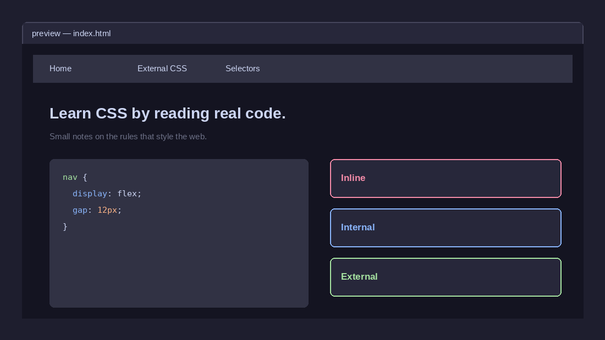

Learn CSS by reading real code.
A small reference site for the rules that style the web — how to attach CSS to a page, how selectors are written, and which rule wins when two of them disagree.
A small reference site for the rules that style the web — how to attach CSS to a page, how selectors are written, and which rule wins when two of them disagree.

Where you are right now — an overview of what this notebook covers and why it's organized this way.
02The three ways to attach CSS to HTML, why external files are the one most sites use, and the cascade order between them.
03Element, class, ID, descendant, pseudo-class and attribute selectors — what each one targets and when to reach for it.